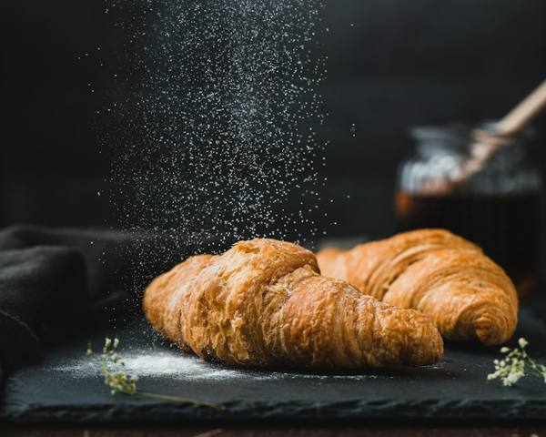
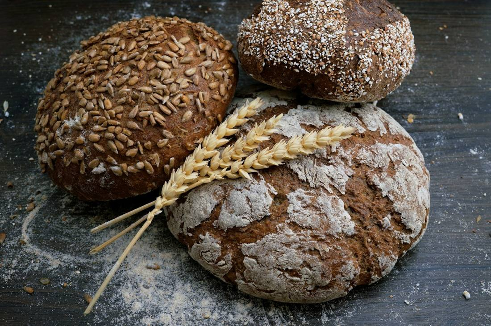

THE MORNING EDITSlow mornings.
Buttery layers. One more coffee.
A little México. A little everyday magic.
Mexican roots, golden mornings.
A new way to fall in love
with your neighborhood bakery.

Find your new ritual

THE MORNING EDITButtery layers. One more coffee.
Beautiful bread. A place at your table.
Six little reasons to smile
For your people. For the weekend. Just because.
Pick your favorite conchas and make a little room for something sweet.
Rooted in México. At home in California.
A contemporary panadería with an old soul. Bringing the warmth of the Mexican table to the everyday California life.
Find your everyday favorite ↗